Explore London
A Brief History
London grew from a Roman Londinium on the Thames into the capital of the Kingdom of England and later the United Kingdom. Medieval Westminster, Tudor commerce, and Georgian expansion gave way to Victorian industry and 20th-century reconstruction after wartime bombing. The Tower, St Paul's Cathedral, royal parks, and parliamentary institutions show how the city became a global financial and cultural centre.
Attractions Map
Top Sights & Activities
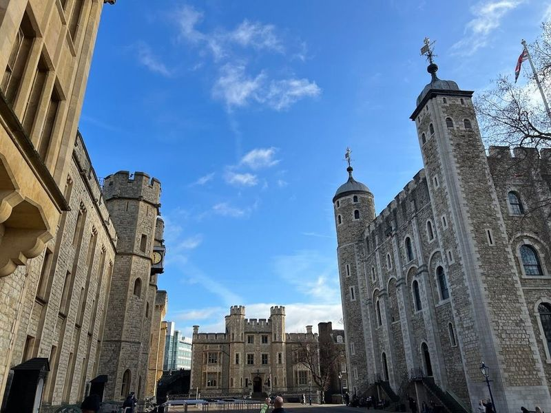
Tower of London
The Tower of London is a captivating medieval castle steeped in centuries of tumultuous history. Once a formidable fortress commissioned by William the Conqueror, it has served various roles throughout the ages, including that of a royal residence, prison, and even a zoo housing exotic animals like polar bears and lions. Today, it stands as the proud guardian of the Crown Jewels and is watched over by the Beefeaters.
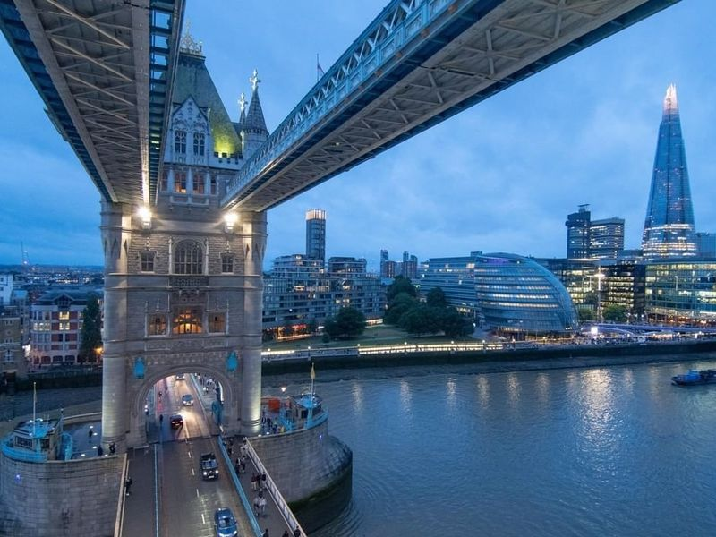
Tower Bridge
Tower Bridge is a must-visit landmark that offers an experience for anyone exploring London. With its high-level walkways, visitors can enjoy panoramic views of the city and the River Thames, making it a perfect spot for photography enthusiasts. The self-guided tour provides fascinating insights into the bridge's history and engineering marvels, including interactive exhibits that explain its unique physics in an engaging way.
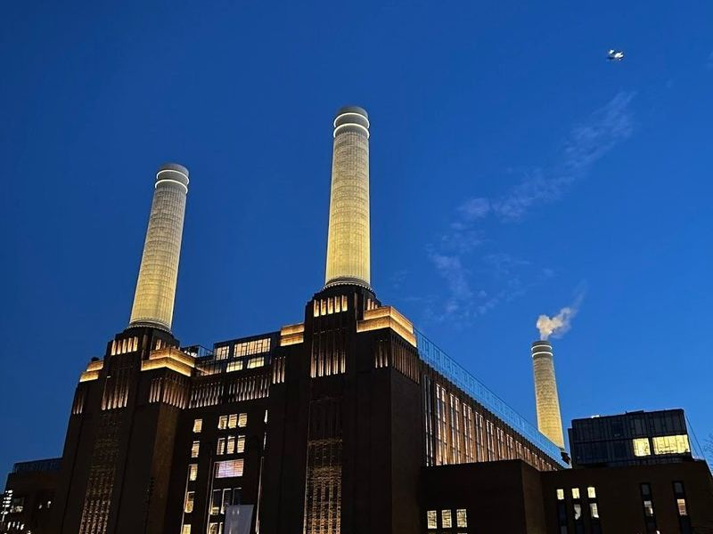
Battersea Power Station
Battersea Power Station, a repurposed Victorian power station located by the riverside in London, has been transformed into a luxury shopping and entertainment destination. The mall offers high-end retail experiences with stylish shops and fine fashion stores such as Tag Hauer, Uniqlo, Tommy Hilfiger, Jo Malone, and Abercrombie and Fitch.
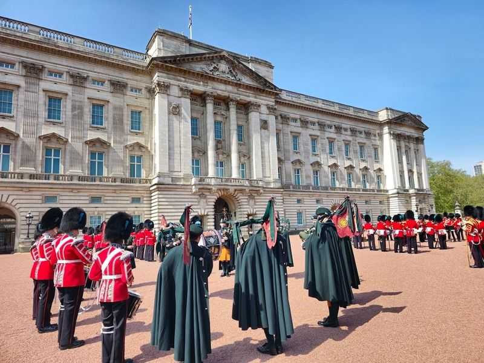
Buckingham Palace
Buckingham Palace, the official residence of the British monarch since its construction in 1703, is a landmark in London. While you may not be able to explore all 775 rooms inside, visitors can marvel at its grandeur from behind secure fencing. A highlight of any visit is witnessing the Changing of the Guards—a vibrant ceremony filled with music and precision marching that showcases a long-standing royal tradition.
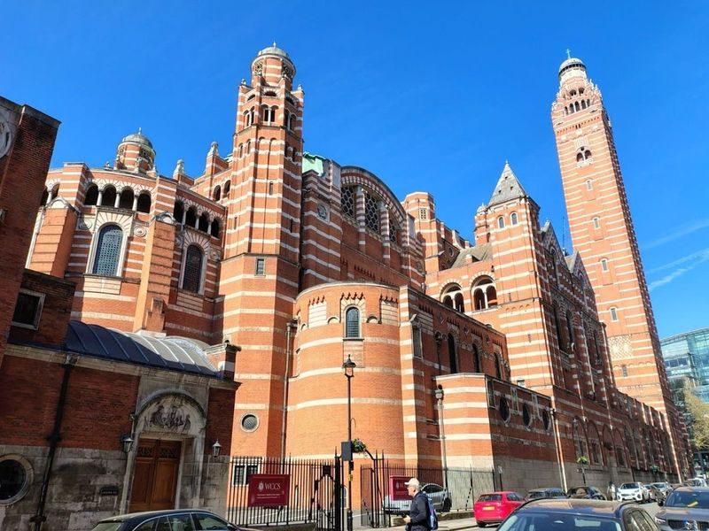
Westminster Cathedral
Westminster Cathedral is a Victorian structure with red and white stripes, featuring a Byzantine style interior adorned with gold, mosaics, and marble. It serves as the Roman Catholic Church's headquarters in England and is led by the Archbishop of Westminster. This neo-Byzantine architectural marvel was consecrated in 1910 and ranks as the 50th largest church globally.
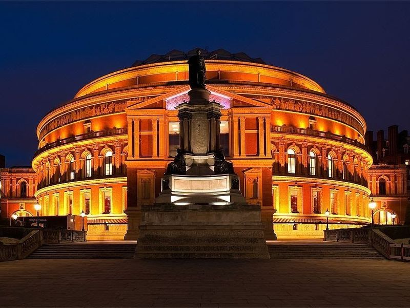
Royal Albert Hall
The Royal Albert Hall is a renowned performance venue and a cherished British landmark. Built as a tribute to Prince Albert by Queen Victoria, the red-and-gold domed auditorium has hosted significant cultural events and welcomed both rock stars and royalty over its almost 150-year history. It is also known for hosting grand tea parties, including one attended by Queen Elizabeth II to celebrate the WI's 100th anniversary.
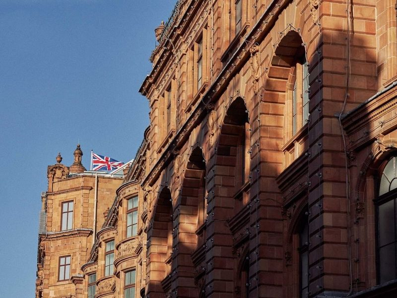
Harrods
Harrods, a historic London department store established in 1849, is a popular destination for tourists and shoppers alike. The store's 19th-century exterior is a sight to behold, especially during the festive season when it is adorned with rows of string lights. In recent years, Harrods has undergone significant changes by introducing renowned brands like Dior, Louis Vuitton, and Burberry for exclusive takeovers.
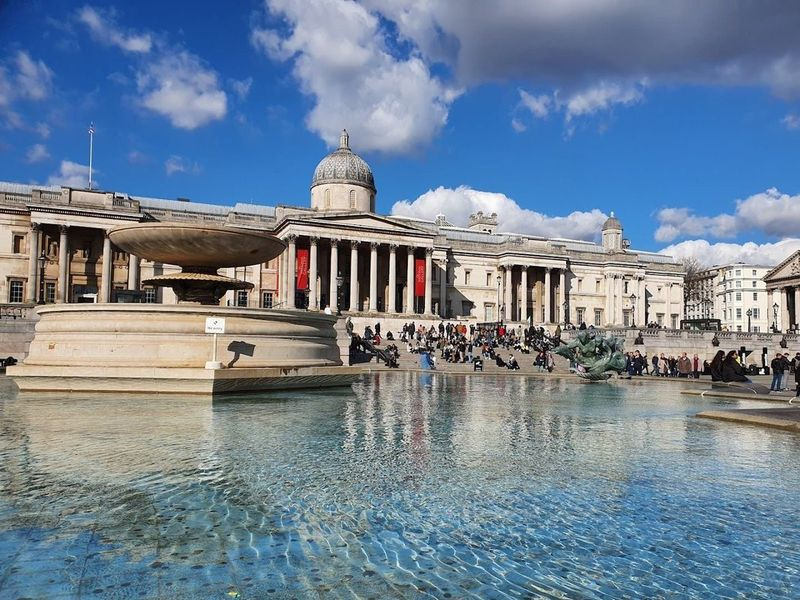
Trafalgar Square
Trafalgar Square, an landmark in London, is home to Nelson's Column, surrounded by LED-lit fountains, lion statues, and various artworks. This historic square has been a significant part of London for centuries and continues to hold a special place in the hearts of its residents. It pays tribute to the city's rich history with monuments dedicated to courageous figures like Admiral Lord Nelson.
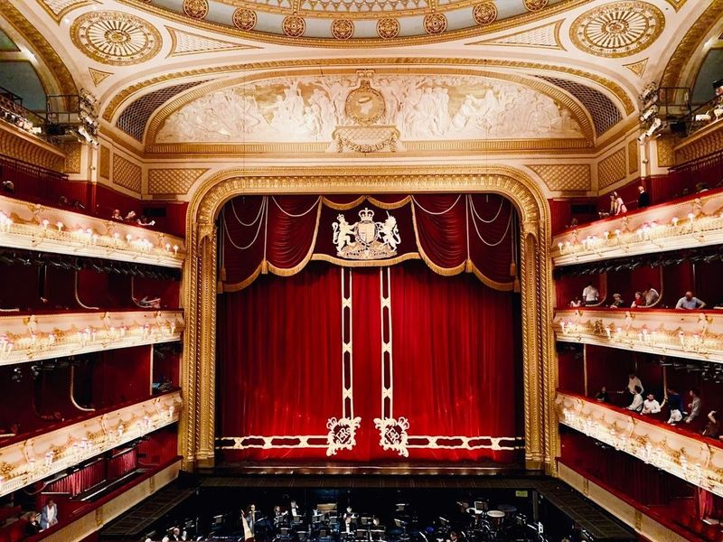
Royal Ballet and Opera
The Royal Opera House in Covent Garden, London, is a historic venue known for its opera and ballet performances. With a rich history dating back to the 18th century, this theater offers opulent auditoriums and captivating productions that showcase lavish sets and virtuosic performances. Visitors can immerse themselves in the realm of theatrical splendor while enjoying traditional opera music, orchestras, or ballet.
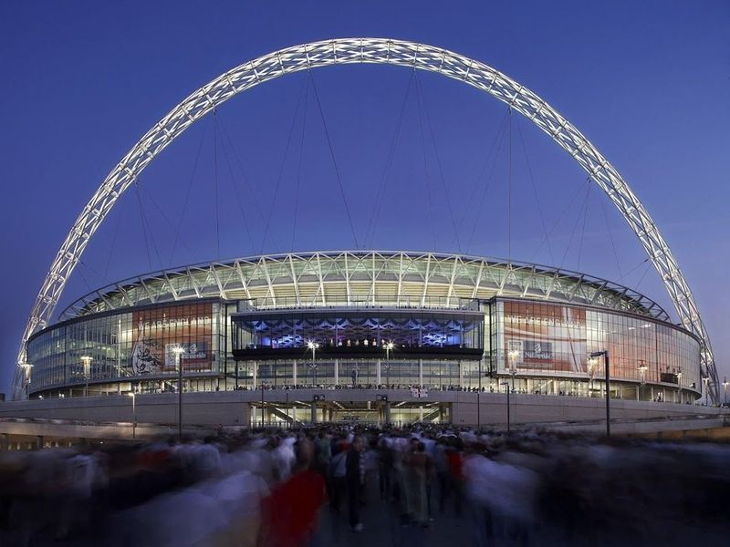
Wembley Stadium
Wembley Stadium stands as a monumental landmark in London, renowned for hosting significant football events such as the FA Cup Final and various international matches. Designed by the esteemed architect Norman Foster, this state-of-the-art venue can accommodate up to 40,000 spectators at once. Its impressive structure features a retractable roof and an 133-meter high arch that not only enhances its aesthetic appeal but also supports much of the main roof.
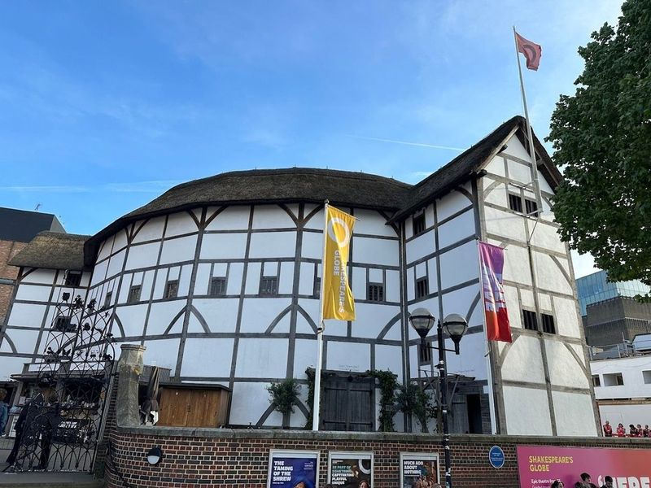
Shakespeare's Globe
Shakespeare's Globe is a reconstructed Elizabethan theater made of oak and thatch, where Shakespeare's plays are performed in the open air. It is located in London, near several famous landmarks such as Tower of London, Tower Bridge, and Buckingham Palace. Visiting this theater can provide a unique opportunity to experience the stories behind Shakespeare's works and gain a new perspective on his writing style.
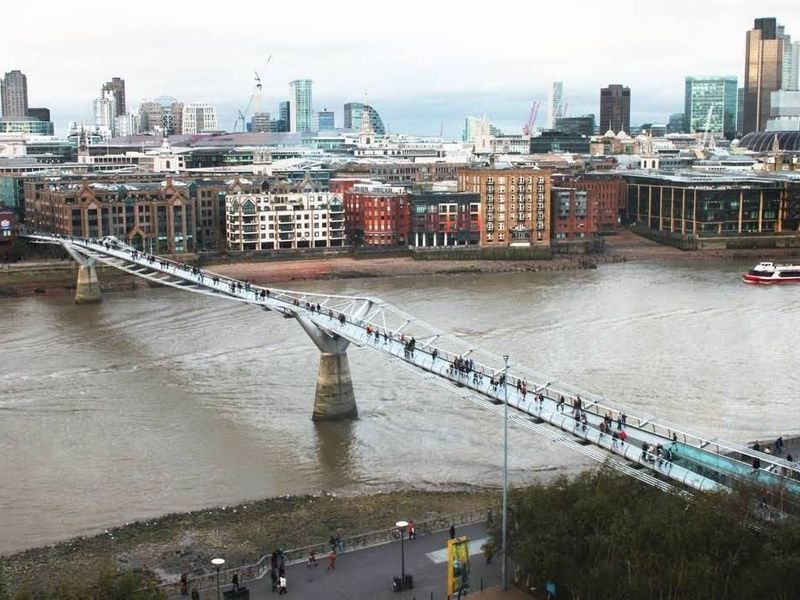
Millennium Bridge
The Millennium Bridge is an elegant steel suspension footbridge that spans the Thames River, connecting the Tate Modern to St Paul's Cathedral. It holds several distinctions, being the newest crossing on the Thames and exclusively for pedestrians. Despite its short-lived initial opening, it has become a symbol of the 21st century since its conceptualization in 1996. The bridge offers easy access to nearby attractions such as Shakespeare's Globe Theatre and the Tate museum.
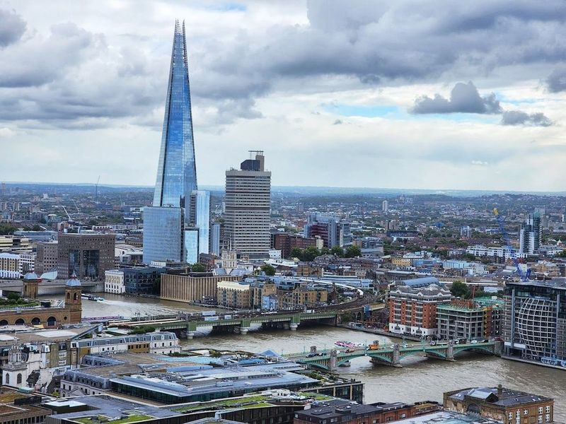
St. Paul's Cathedral
St. Paul's Cathedral, a 17th-century church with a towering 365ft-high dome, is an landmark in London. Despite being rebuilt five times, it remains a structure and one of the city's most famous churches. Visitors can explore its peaceful interior adorned with artwork and find tranquility in the churchyard and gardens outside. As a working cathedral, visitors should plan their visit around opening times or attend a service for a more immersive experience. St.
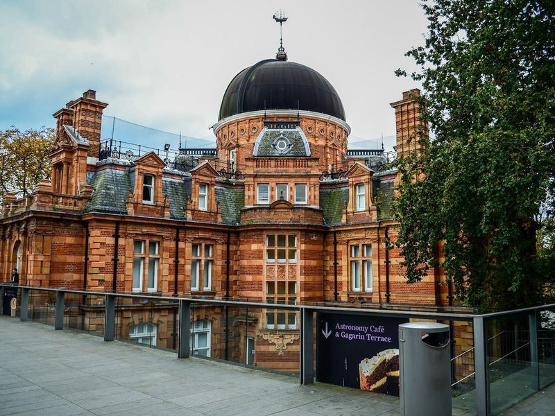
Royal Observatory Greenwich
The Royal Observatory Greenwich, located in Greenwich, is a historic 18th-century astronomical observatory that now serves as a museum and planetarium. Visitors can enjoy views of the city and participate in regular stargazing events and astronomy evenings. The observatory offers exhibits on time and a small astronomy center, with free access to some areas including the opportunity to watch the Time Ball drop daily at 1pm.
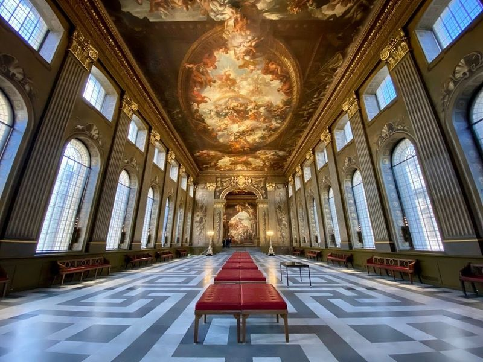
Old Royal Naval College
The Old Royal Naval College, located in Greenwich, is an elegant riverside complex designed by Sir Christopher Wren. It houses a maritime museum and is known for the Painted Hall, often referred to as the Sistine Chapel of England. The hall features intricate Baroque designs covering 40,000 square feet of walls and ceilings depicting figures from history and mythology.
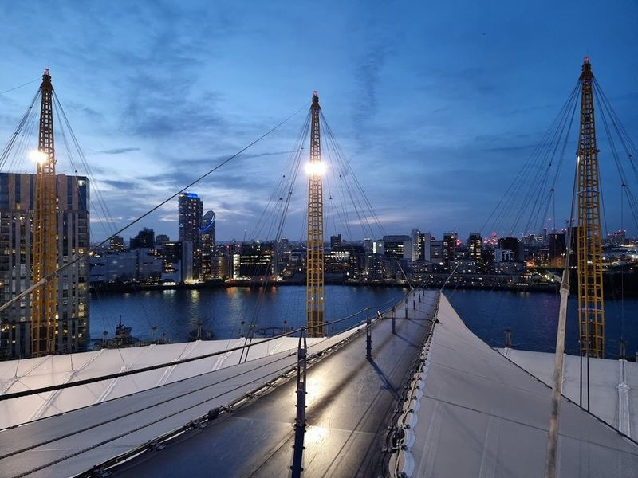
The O2
Located in London, The O2 is a renowned arena that can accommodate up to 20,000 fans and hosts top concerts and elite sporting events. Situated at the Greenwich Peninsula in North Greenwich, it also features an expansive shopping outlet mall with over 60 shops offering significant discounts on a wide range of brands.
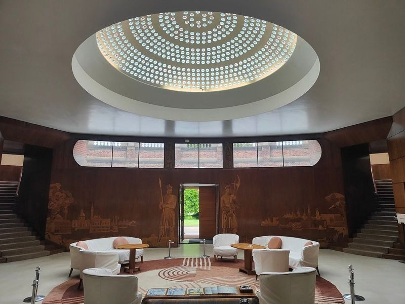
Eltham Palace
Eltham Palace is a unique blend of medieval grandeur and 1930s art deco style, located in the Royal Borough of Greenwich. Once a favorite retreat for Henry VIII, it has undergone two major transformations throughout its history. The palace features a medieval great hall alongside an extravagant mansion annexed by the Courtauld family. Visitors can explore the Map Room where round-the-world adventures were planned and a lavish 1930s walk-in wardrobe with genuine dresses from that era.
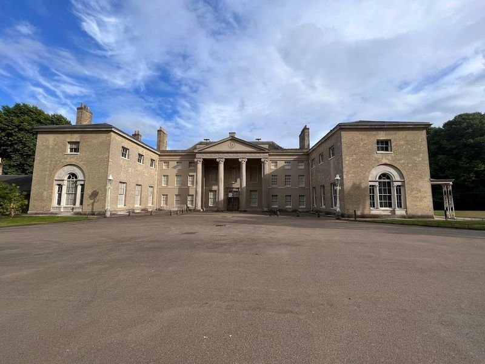
Kenwood House
Kenwood House is a 17th-century country house located within the picturesque Hampstead Heath. The neoclassical residence boasts restored interiors and houses an impressive collection of famous paintings by renowned artists such as Rembrandt, Turner, Reynolds, Gainsborough, and Vermeer. The house was remodeled between 1764 and 1779 and features elegant Georgian period rooms along with an extensive library.
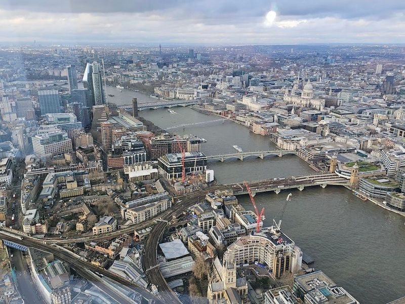
The Shard
The Shard is an 87-floor glass skyscraper with a distinctive jagged peak, standing at 306 meters tall, making it the tallest building in the European Union. Located in London Bridge Quarter Development, it houses offices, restaurants, a hotel and an indoor/outdoor observation deck on the 72nd floor offering panoramic views of London.
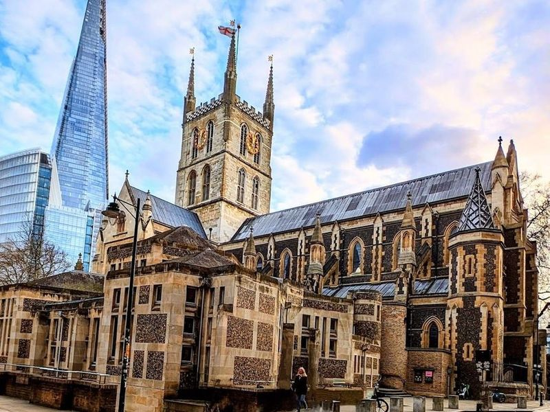
Southwark Cathedral
Nestled near London Bridge and the River Thames, Southwark Cathedral stands as a serene testament to Gothic architecture and rich history. Known officially as The Cathedral and Collegiate Church of St Saviour and St Mary Overie, this remarkable structure is one of London's oldest churches, with roots tracing back to the time of William the Conqueror. Visitors can enjoy daily services for free while soaking in its elegant ambiance.
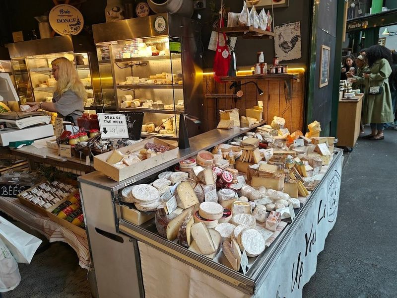
Borough Market
Borough Market is a historic and bustling food market located under the railway lines near London Bridge. It has been a part of London's culinary scene since the 12th century and has experienced a recent revival, making it one of Europe's top foodie destinations. With its Victorian architecture and over 100 stalls, the market offers a wide variety of goods, including British-reared meat, artisanal baked goods, dairy products, fresh produce, charcuterie, cheeses, chocolates, and more.
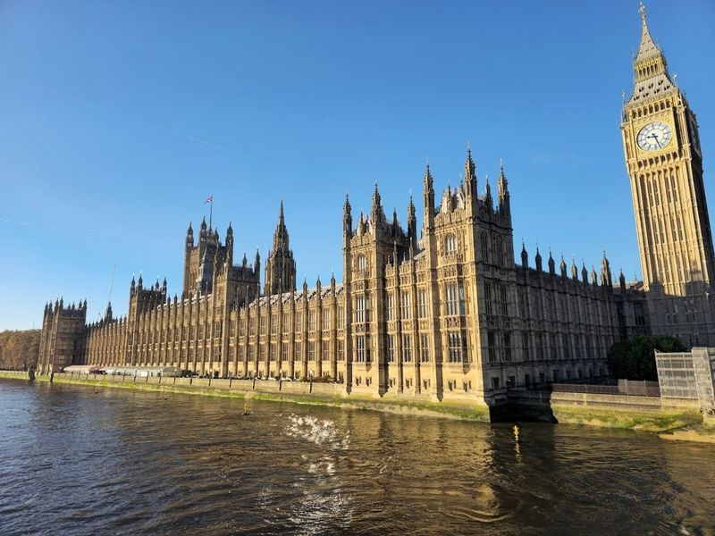
Big Ben
Big Ben, also known as the Elizabeth Tower, is a 16-storey Gothic clocktower located at the Eastern end of the Houses of Parliament in London. It is a global icon of neo-Gothic design and has been a symbol of British governance since its controversial renovation in 1835. Designed by Charles Barry and Augustus Pugin, Big Ben's completion in 1860 marked an addition to the London skyline.
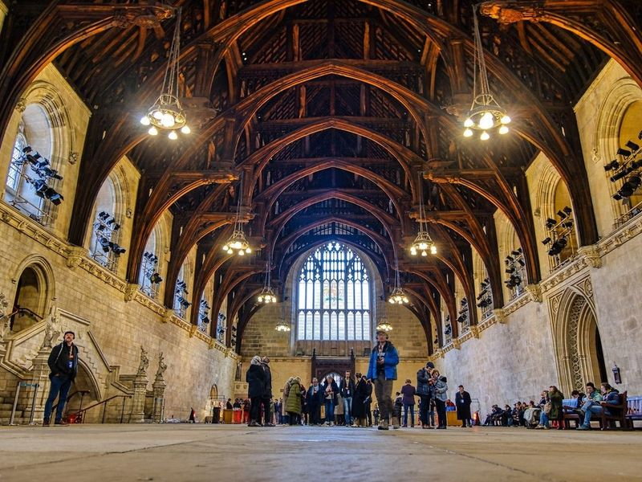
Palace of Westminster
The Palace of Westminster, also known as the Houses of Parliament, is a Neo-Gothic architectural marvel and serves as the seat of the UK government. It has a rich history dating back to the middle ages when it was built by Edward the Confessor and later became home to William the Conqueror and his court.
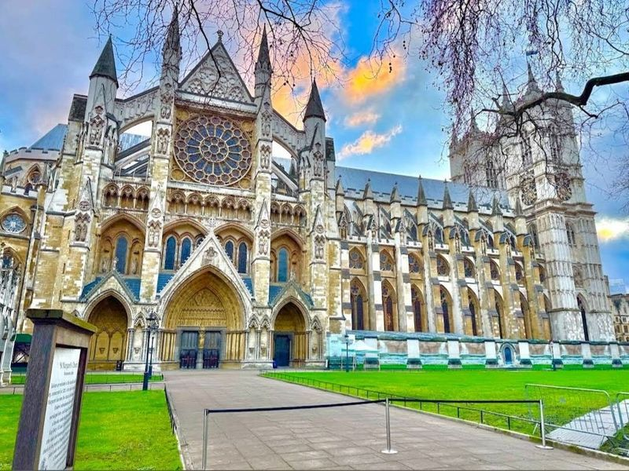
Westminster Abbey
Westminster Abbey is a Gothic church steeped in history, with its current structure dating back nearly 800 years. This site has been the backdrop for every English and British coronation since 1066, as well as numerous royal weddings and state funerals. As you wander through its hallowed halls, encounter the final resting places of over 30 monarchs alongside luminaries like Isaac Newton, Charles Darwin, and Stephen Hawking.
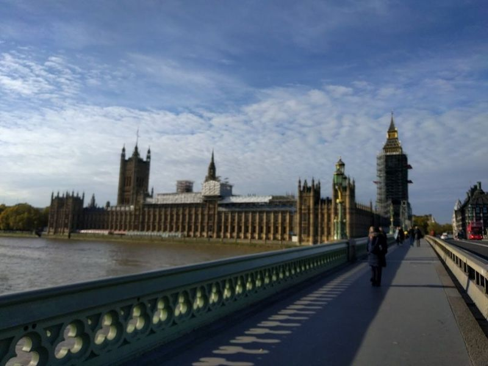
Westminster Bridge
Westminster Bridge, painted in a matching green to the House of Commons' leather seats, spans 252 meters and connects Lambeth to Westminster. The bridge, constructed in 1862, boasts Gothic design details and seven intricately carved arches. It features the Coat of Arms of Queen Victoria and Albert as well as Henry John Temple. Additionally, ornate lamps and trefoil cut-outs adorn the structure.
SEA LIFE London Aquarium
SEA LIFE London Aquarium is a family-friendly destination featuring a wide variety of sea creatures and offering play areas and group packages. With over 500 species from around the world, visitors can explore two million litres of water and learn about marine life conservation through educational programs at the learning centre. The aquarium's glass tunnel provides an immersive experience as majestic ocean creatures swim just inches beneath your feet.
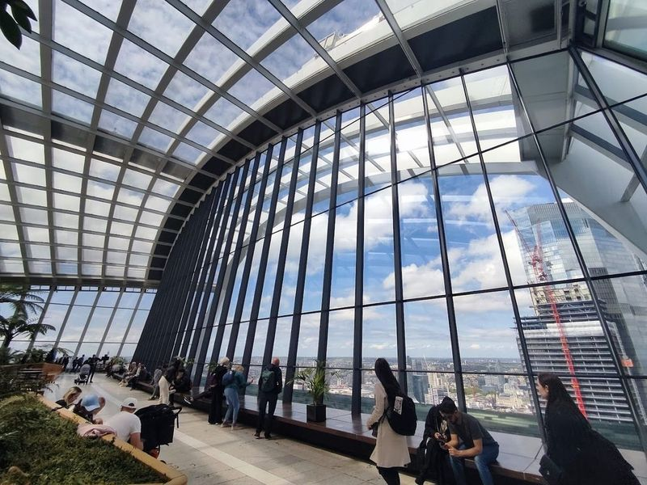
Sky Garden
Sky Garden, also known as the Walkie Talkie due to its distinctive shape, is a must-visit destination in London. Located 43 floors above the city, this lush green space offers 360-degree views through floor-to-ceiling windows. The garden is filled with Mediterranean and South African plants, creating a unique botanical experience high above the bustling streets. Entry is free but requires advance booking due to limited spaces.
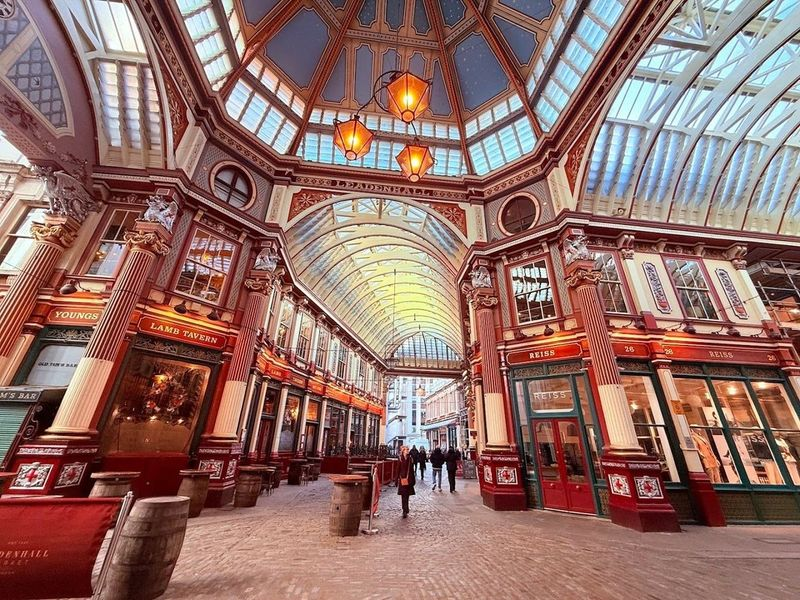
Leadenhall Market
Leadenhall Market is a historical Victorian indoor marketplace located on Gracechurch Street. The market offers a unique blend of traditional and modern shops, restaurants, and bars within its grand architecture and cobblestone pavement dating back to 1881. It has been featured in popular movies such as Harry Potter and the Philosophers Stone. Visitors can explore authentic Victorian splendor while shopping for apparel, accessories, or enjoying events, concerts, talks, and installations.
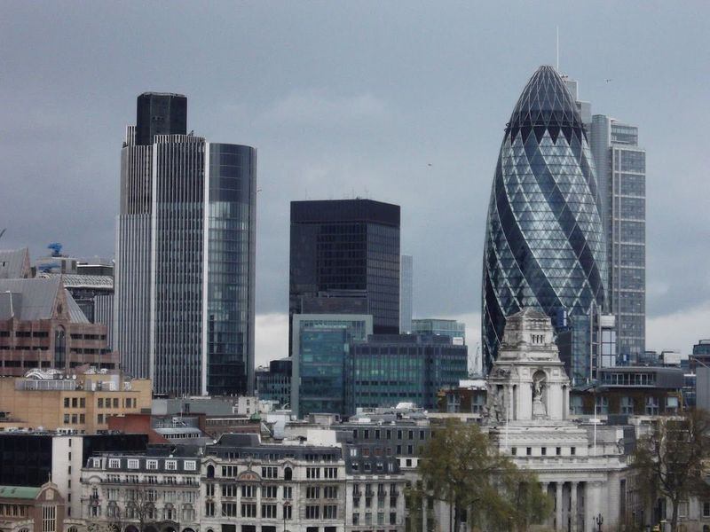
30 St Mary Axe (The Gherkin)
30 St Mary Axe, also known as The Gherkin, is a distinctive bullet-shaped office tower in London. Designed by Norman Foster, it stands at 180m and features swirling light and dark glass. Initially mocked, the building quickly became an part of the city's skyline. The site has historical significance, being named after a vanished church and having archaeological finds during its construction.
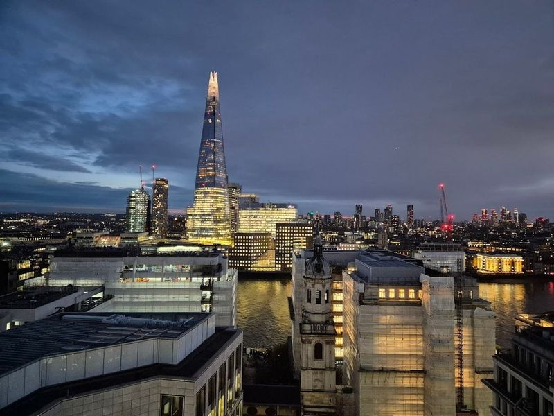
Monument to the Great Fire of London
The Monument to the Great Fire of London commemorates the 1666 blaze that destroyed much of the medieval city. Sir Christopher Wren's Doric column rises 202 feet near Pudding Lane, where the fire began. Visitors can climb 311 steps to a viewing platform for panoramic Thames and City skyline vistas, including St Paul's Cathedral.
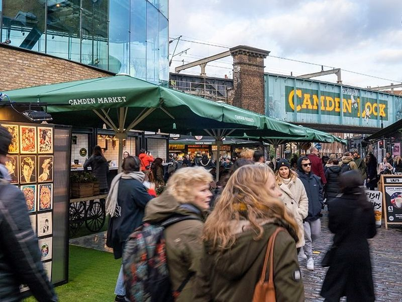
Camden Market
Camden Market is a vibrant and diverse market in London that draws in over a quarter of a million visitors weekly. It encompasses several interconnected indoor and outdoor markets, offering an extensive range of products from fashion and homeware to food and alcohol. The market reflects the unconventional subcultures of Camden with stalls catering to alternative fashion styles like cybergoth, steampunk, and grunge.
London Zoo
London Zoo, located in Regents Park, is a major city zoo and research center dedicated to conserving various species in naturalistic habitats. It offers a wide range of activities for visitors, including getting up close to giraffes, watching meerkats, visiting the sloth exhibit, and observing tigers. The zoo also hosts child-friendly activities on a daily basis and provides opportunities for kids to interact with their favorite animals through public feeding times and demonstrations.
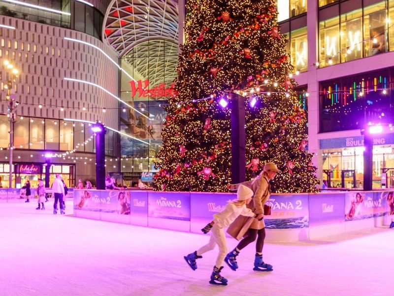
Westfield London
Westfield London, located near Hammersmith and Shepherds Bush in West London, is the largest shopping mall in the city and the UK. With over 400 stores, concessions, and restaurants, it offers a wide range of options for shoppers. From popular high street chains like Zara and H&M to luxury brands such as Gucci and Armani, the mall caters to diverse tastes.
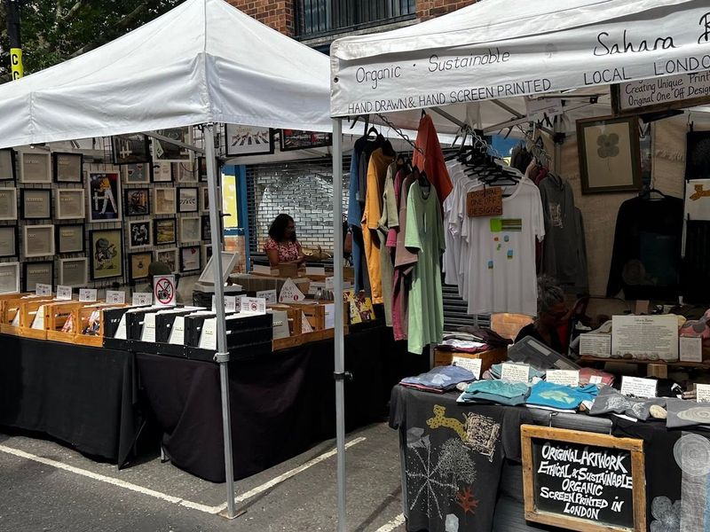
Portobello Road Market
Portobello Road Market is a bustling weekly market in the charming neighborhood of Notting Hill, London. It offers a wide array of vintage goods, street eats, souvenirs, and more. The market gained popularity for its high-quality fresh breads, pastries, cheeses, meats, fish, and condiments. Visitors can explore rows of gems, vintage sunglasses, rare books and pre-loved wares along the street.
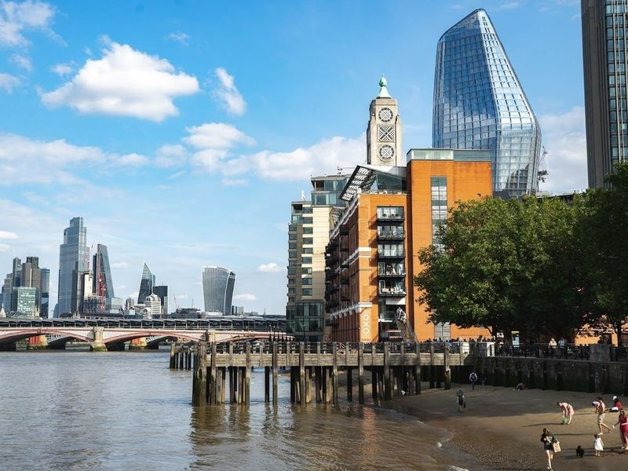
Oxo Tower
The Oxo Tower is a well-known landmark located on the south bank of the River Thames in London. It features a public viewing area that offers views of St Paul's Cathedral and the bustling river traffic. The tower also houses shops, dining options, and an art gallery. Visitors can access the free public viewing platform without needing to book a ticket, making it a hidden gem for capturing photographs of London's landmarks.
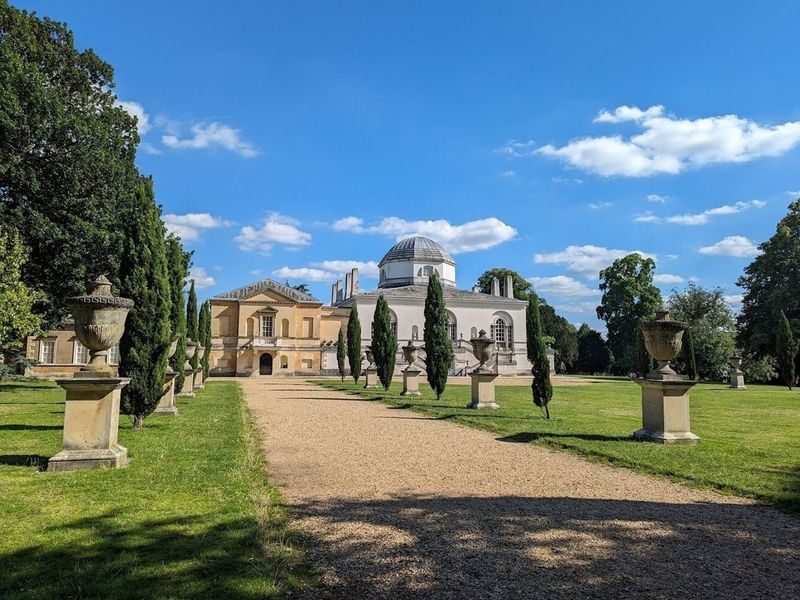
Chiswick House and Gardens
Chiswick House and Gardens is a mansion and garden complex in London, inspired by the Earl of Burlington's travels in Italy. The estate features restored gardens, statuary, and architectural elements that make it a popular venue for events and weddings. After a significant renovation, the 65-acre property reopened to the public with fragrant rose gardens, woodlands, and diverse flora.
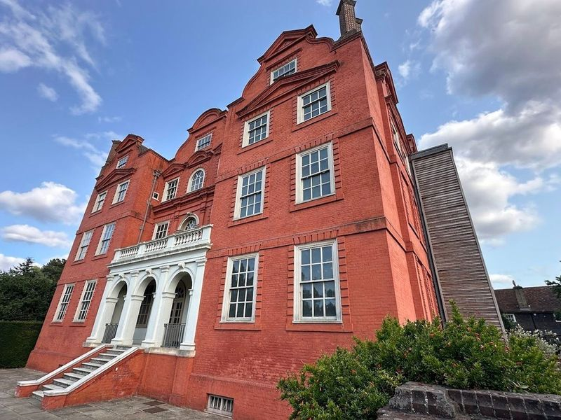
Kew Palace
Nestled within the Royal Botanic Gardens at Kew, Kew Palace is a charming red brick stately home with well-preserved 200-year-old kitchens. Despite being the smallest of the British Royal Palaces, its picturesque setting amidst the lush greenery of Kew Gardens makes for a sight. Originally built in 1631 and later acquired by the Royal family, this quaint palace was once home to King George II and his three older daughters.
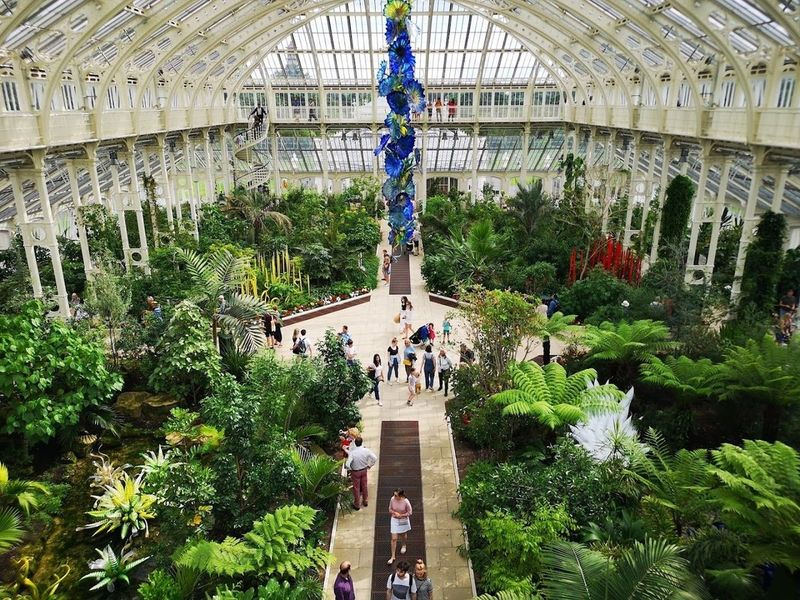
Royal Botanic Gardens, Kew
The Royal Botanic Gardens, Kew in Richmond is a renowned destination featuring an extensive collection of trees and flowers from all over the world. Visitors can explore vast gardens, expansive greenhouses, and a treetop walkway. The gardens are home to rare and threatened plants housed in the largest Victorian glasshouse globally. Additionally, there are family-friendly exhibitions and events such as Kew the Music, a week-long music festival with acclaimed performers like Lewis Capaldi.
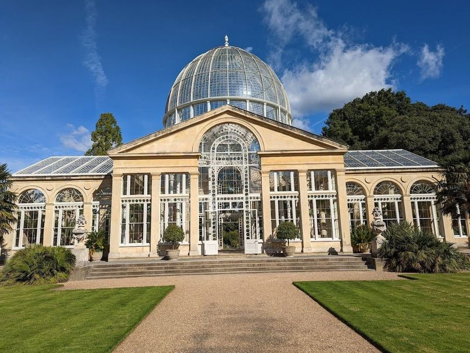
Syon Park
Syon Park is a historic estate located near Kew Gardens, boasting vast landscaped grounds and a Grade I-listed building. It is the last surviving ducal residence in London, home to the Duke of Northumberland and encompassing 40 acres of beautiful gardens within 200 acres of parkland. The estate features the Great Conservatory and offers an idyllic venue for weddings, accommodating intimate or extravagant celebrations.
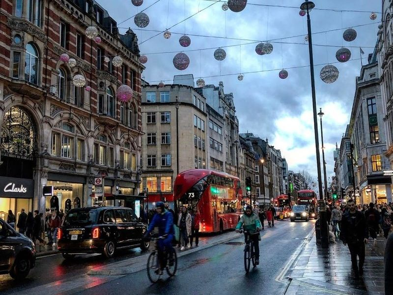
Oxford St
Oxford Street is a bustling 1.5-mile stretch that boasts around 300 retailers, including major department stores and flagship stores of superbrands like Gap, River Island, Primark, and more. It's the world's biggest high street, offering a vibrant mix of fashion, entertainment, beauty, and technology. The street is serviced by three underground stations: Marble Arch, Bond Street, and Oxford Circus.